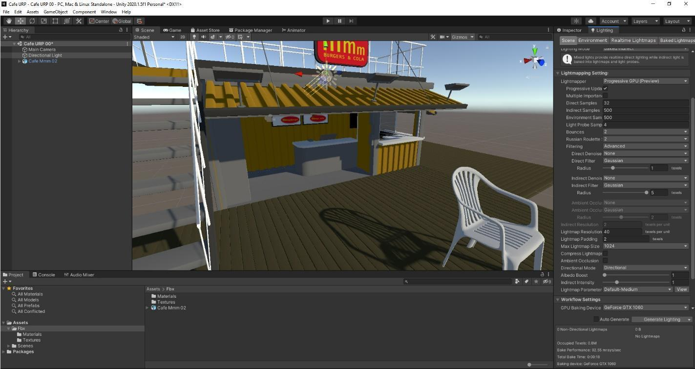

URP Lighting with Café Model
Synopsis and additions to the following video tutorials for the Café model (or other Assets):
https://www.youtube.com/watch?v=7YzWexOAggc
https://www.youtube.com/watch?v=vmwdKK-GZDc
- Create new Unity Project � Universal 3D (URP)example template

Gyazo preview (click image to expand). - Or To convert existing Built-In(Standard) 3D project to URP:
- https://youtu.be/KpTK-OraZ-g
- In Existing project, Import Universal RP package from Unity Registry in Package Manager
- Right Click in Project window � Greate Rendering/URP Asset with Universal Renderer
- Edit/Project Settings/Graphics/Select the URP (Universal Render Pipeline Asset you created above
- Convert materials: Window/Rendering/Render Pipeline Converter/
- Select Built in to URP
- Tick Rendering Settings
- Tick Material Upgrade
- Press Initialise Converters
- Click Convert assets

Gyazo preview (click image to expand).
- Trouble shoot individual materials with change from Standard to URP in Inspector
- In a URP Project with some Pink (Standard) Materials, convert a range of standard materials to URP by Can convert material from standard to URP by selection in hierarchy and selecting: Top Menu/Edit/Rendering/Materials/Convert Selected Built in Materials to URP
- Create new Scene: Standard URP (Has Global Volume)

Gyazo preview (click image to expand). - Import Café model � extract Textures and Materials to created folders
- Drag Café model into new scene
- Open and Check Lighting tab (Top Menu/Window/Rendering/Lighting) - Create New Lighting Setting from Button �New� at the top of the lighting window
- Enable Baked Global Illumination under Mixed Lighting, and baked Indirect in the Lighting Mode drop down box
- Enable Auto Generate at bottom of page � this eliminates the black shadows by using ambient light from the skybox

Gyazo preview (click image to expand). - Go to Edit/Project Settings/Player/Other Settings � change color space to Linear
- In Edit/Project Settings/Quality/Rendering/RenderPipelineAsset - check - should be URP-HighFidelity (Universal Render Pipeline Asset)
- In the Inspector/Directional Light � rotate to 30,-150,0 or to taste
- In Lighting Window � Environment Tab, test effects of using color rather than Skybox
- Baking Indirect Light:
- Lighting/Scene � Untick Auto-Generate at bottom
- Lighting mode: Dropdown box to to Baked Indirect
- Lightmapper: Dropdown box to Progressive GPU
- Lightmap Compression: Dropdown box to None
- In Hierarchy, Inspector, make Café Static (and children)
- In Hierarchy, Inspector, Directional Light �
- Mode: Dropdown box to Mixed
- Shadows/Realtime Shadows/Bias: dropdown box to Custom, zero out
- In Lighting Window � clear baked data (recalculate Environment), then �Generate Lighting�
- This is Baked indirect lighting with real time shadows.
- Add Fog
- Lighting Window/Environment/ Tick Fog
- Select Linear in Mode drop down box
- Set start to 5, end to 150
- Pick color
- Post Processing Setup - Camera
- No Post Processing layers or setup needed with URP
- Post Processing Setup � Global Volume
- No Post Processing Volume setup needed with URP
- Just make sure Global Volume in Hierarchy is active and its component Volume/Mode is Global
- Can adjust Weight of overall effect
- Check it has profile
- If you don�t have a Global Volume, add it from top Menu/Game Object/Volume/Global Volume
- Create new Volume Profile in Inspectore window for Global Volume

Gyazo preview (click image to expand).
- Just Add Overrides for Options
- Defaults are Tonemapping, Bloom
- Tick to activate needed settings and adjust
- Suggested Overrides:
- Ambient Occlusion
- Depth of Field
- Motion Blur
- Vignette
- For Glow/Emission �
- Check HDR in Main Camera (may be in First Person Character) is set to �Use Settings from Render Pipeline Asset�
- Create a Dark Skybox
- Create Material
- In shader dropdown select Skybox/Procedural
- Adjust down Sun Tint, Atmosphere Tint
- Take HDR exposure down to .3
- Drag into Lighting/Environment/SkyboxMaterial box to replace old Skybox Material
- Adjust Directional light Color down in Hierarchy to taste
- Select Café Railings and adjust material to less than 100% White
- Add Bloom to Volume
- Try adjustments above 1 for intensity, and about .8 for threshold
- You will have to adjust the Skybox and some materials to not be pure white, so they do not bloom
- You can now add objects with Emission materials for glow.
- Glow - Create Cube with Emission Material
- Create Material
- Tick Emission
- Below Emmission select Color Picker box nest to Emmission map tickbox, Pick HDR color to be bright
- In same color picker select intensity to be 1 or above

Gyazo preview (click image to expand). https://gyazo.com/7227f3ff142b59f2bdb258c4894d9650

Gyazo preview (click image to expand).
- At this point you will want to rethink your Directional Light(s) and Rebake!
- Try it with the actual Light objects....
- Create a Dark Skybox
- References for Bloom
- Check HDR in Main Camera (may be in First Person Character) is set to �Use Settings from Render Pipeline Asset�
- No Post Processing Volume setup needed with URP
Troubleshooting (Settings to check):
- Top Menu/Edit/Project Settings/Quality/Current Active Quality Level = High Fidelity
- Top Menu/Edit/Project Settings/Quality/Rendering/Render Pipeline Asset = URP �HighFidelity(Universal Render Pipeline Asset)
- Window/Rendering/Lighting/Scene/Lighting Settings/Lighting Settings Asset = �LightingSettingYouMade�(press New)
- Window/Rendering/Lighting/Scene/Mixed Lighting/Realtime Global Ilumination = off
- Window/Rendering/Lighting/Scene/ Mixed Lighting /Baked Global Ilumination = on
- Window/Rendering/Lighting/Scene/Lightmapping Settings/Lightmapper = Progressive GPU
- Window/Rendering/Lighting/Scene/Lightmapping Settings/AutoGenerate = off (press Generate Lighting as needed)
- Hierarchy/Post Process Volume/Global Volume/Profile (�SampleProfile or ProfileYouMade�(press New)
- Hierarchy/Global Volume/Overrides as desired...
- Hierarchy/Global Volume/Mode/Global
- Hierarchy/Global Volume/Profile/Make new one � click �New� Button
- Check URP Renderer: Top Menu/Edit/Project Settings/Graphics/ Scriptable Render Pipeline Settings:
- URP-HighFidelity (Universal Render Pipeline Asset)
- Check URP Renderer: Top Menu/Edit/Project Settings/Graphics/URP Global Settings:
- UniversalRenderPipelineGlobalSettings (Universal Render Pipeline Global Settings)
- Settings - How to Fix Pink Materials in Unity 2023 | Render Pipeline Basics
Stretch Targets:
- Import camera from week 11 or Starter Assets for FPC/3PC
- Try different skyboxes � 1 color, panoramic

Gyazo preview (click image to expand). - Make Light Probes for moving lights
- URP Converting and Pink Material troubleshooting:
- Create new Unity Project � URP example template
- To convert Standard to URP:
- https://youtu.be/KpTK-OraZ-g
- In Existing project, Import Universal RP package from Unity Registry in Package Manager
- Right Click in Project window � Greate Rendering/URP Asset with Universal Renderer
- Edit/Project Settings/Graphics/Select the URP (Universal Render Pipeline Asset you created above
- Convert materials: Window/Rendering/Render Pipeline Converter/
- Select Built in to URP
- Tick Rendering Settings
- Tick Material Upgrade
- Press Initialise Converters
- Click Convert assets
- Trouble shoot individual materials with change from Standard to URP in Inspector
- Materials: Edit/Rendering/Materials/Convert to URP
- Materials: Adjust materials by hand in inspector to Shader: URP/Complex Lit
- How to Fix Pink Materials in Unity 2023 | Render Pipeline Basics
Stretch Targets - Camera (3PC or FPC from Starter Assets):
- Add Standard Assets
- Add FPC Prefab to Hierarchy
- Window/Package Manager
- Select top left drop down for My Assets
- Add downloaded Starter Assets - First Person Character Controller
- Disable old Main Camera
- Rotate and move Player Capsule to face the Cafe
- Test by playing.
Video Resources (7)
Video 1
Video 2
Video 2
Video 3
Video 3
Video 4
Video 4
Video 5
Video 5
Video 6
Video 6
Video 7
Video 7
Reference media and links
